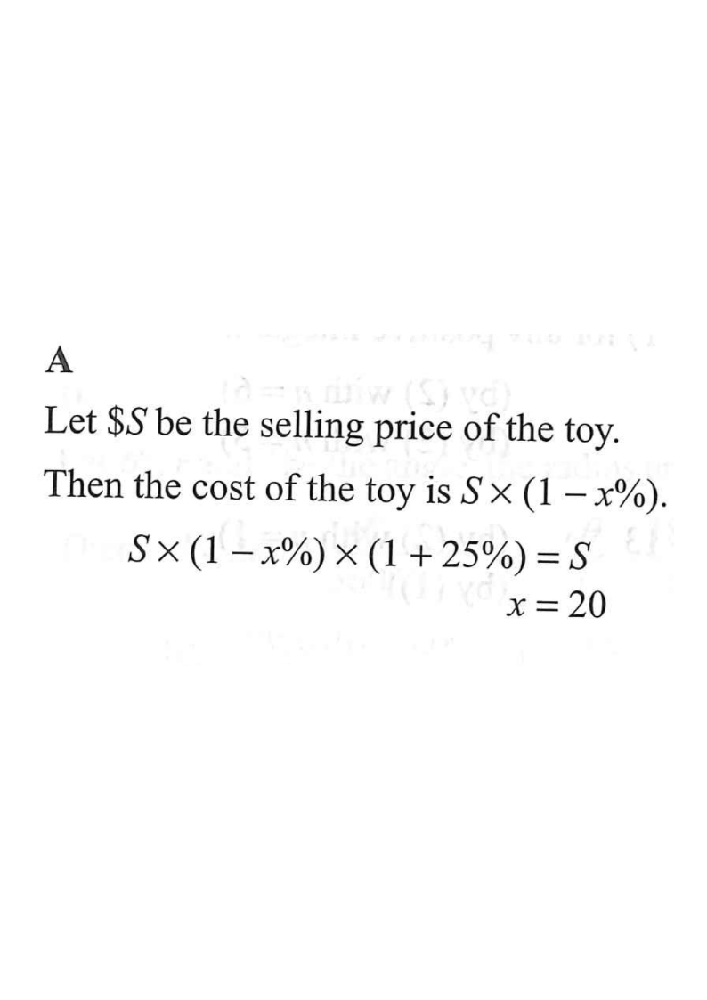

Step 1 — Let the selling price be $S$.
Q. The cost of a toy is $x\%$ lower than its selling price. After selling the toy, the percentage profit is $25\%$. Find $x$.
Then "$x\%$ lower than its selling price" means the cost is $S\,(1-x\%)$.
Always introduce a symbol for the unknown base value.Percentage profit $= \dfrac{\text{Profit}}{\text{Cost}}\times 100\%$.
A profit of $25\%$ means the selling price equals the cost multiplied by $1+25\%$:
$$S = S\,(1-x\%)\times(1+25\%).$$
Profit% is measured on the cost, not on the selling price.$$1 = (1-x\%)\times 1.25$$
$$1-x\% = \frac{1}{1.25} = 0.8$$
$$x\% = 1-0.8 = 0.2$$
$$x = 20.$$
Divide both sides by the factor $1.25$ to isolate $1-x\%$.If $S=100$, cost $=100\times(1-20\%)=80$, and $80\times1.25=100$ ✓. So $x=20$.
Substituting a convenient value of $S$ verifies the answer.
Question. The cost of an item is \(x\%\) lower than its selling price, and the percentage profit is \(60\%\). Find \(x\).